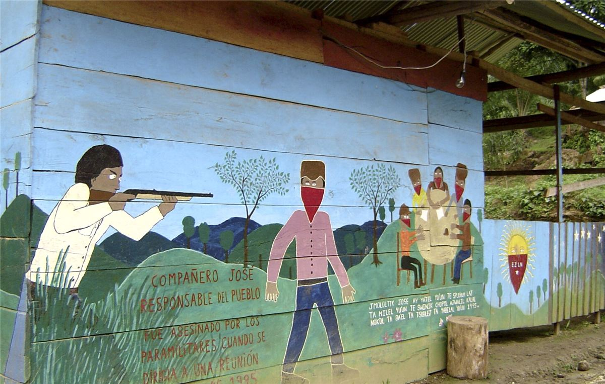

« Mandar obedeciendo »

Commander en obéissant : ceux qui ont une charge ne décident pas à la place des communautés, ils exécutent ce qu'elles ont décidé. Les charges sont tournantes, de courte durée, non rémunérées : pendant leur mandat, la communauté aide à cultiver la parcelle (la milpa) des personnes élues. Une personne qui ne remplit pas son mandat peut être révoquée.
Les sept principes
- Serviret non se servir
- Représenteret non supplanter
- Construireet non détruire
- Obéiret non commander
- Proposeret non imposer
- Convaincreet non vaincre
- Descendreet non monter
De 2003 à 2023 : municipalités et Conseils de bon gouvernement
Pendant vingt ans, l'autonomie s'organise sur trois niveaux. Chaque communauté décide en assemblée. Plusieurs communautés forment une municipalité autonome rebelle (MAREZ), avec son conseil et ses commissions. Au niveau régional, un Conseil de bon gouvernement siège au caracol, avec des délégations qui changent souvent, pour coordonner, régler les conflits et éviter que certaines communautés s'enrichissent plus que d'autres.
Depuis 2023 : retour à la base
Fin 2023, après une longue évaluation interne, les zapatistes jugent que les municipalités et les Conseils de bon gouvernement s'étaient éloignés des communautés. Ils les dissolvent. La nouvelle structure part de chaque communauté :
- GAL (gouvernement autonome local) : un par communauté, des milliers au total. C'est là que tout se décide.
- CGAZ (collectif de gouvernements autonomes zapatistes) : coordonne les GAL d'une région, quand c'est nécessaire.
- ACGAZ (assemblée des collectifs) : se réunit au niveau d'un caracol pour les questions communes.
Ce que l'autonomie prend en charge
| Domaine | Comment |
|---|---|
| Santé | Promotrices et promoteurs de santé formés dans les communautés, cliniques autonomes, savoirs des plantes médicinales. |
| Éducation | Écoles autonomes en langue maya et en espagnol, promotrices et promoteurs d'éducation choisis par les communautés, programmes liés à la terre et à l'histoire du peuple. |
| Justice | Chercher la réparation et la réconciliation plutôt que la punition ; des non-zapatistes viennent parfois y régler leurs conflits. |
| Production | Travail collectif des terres, coopératives (café, artisanat, bétail), caisses communes. |
| Femmes | Coordinations et coopératives de femmes ; application de la Loi révolutionnaire des femmes. |
À retenir
- Le pouvoir reste dans les communautés ; les délégations tournent.
- L'armée zapatiste protège sans gouverner.
- Une organisation qui s'évalue et se corrige elle-même, jusqu'à se démonter quand elle s'éloigne de la base.
Sources et pour aller plus loin
Lire
- Adieux au capitalisme. Autonomie, société du bien vivre et multiplicité des mondes, Jérôme Baschet, La Découverte, 2014.Ce que l'autonomie zapatiste apprend à celles et ceux qui veulent sortir du capitalisme.
- La Rébellion zapatiste, Jérôme Baschet, Flammarion.Les municipalités autonomes et les Conseils de bon gouvernement expliqués.
Sur le web
- Enlace ZapatistaLes communiqués sur la réorganisation de 2023.
- Le municipalisme libertaireUne idée voisine, née ailleurs.
Dossier rédigé par la bande à Mamie à partir de travaux d'historiennes et d'historiens et de textes des mouvements concernés. Libre de reproduction.